The inverse problem
Recovering the generating spec from a simulation
The forward arrow, reversed. Everywhere else on this site Plexus runs forward: a small typed spec (sets, fields, operators, a schedule) is interpreted by a generic engine into a simulation, \(\text{spec}\to\text{engine}\to\text{trajectory}\). This page inverts that arrow. Given only a simulation — the cell positions and the chemical field over time — we recover the eight-number spec that generated it. It is the first inverse result built directly on the Plexus operators, and it works because those operators are explicit and differentiable.
From the forward model to its inverse
The slime spec is eight continuous numbers: four on the field side (deposit.amount, diffuse.rate, decay.rate, sense.cross) and four per-cell motion parameters (move_speed, turn_speed, sensor_angle, sensor_dist). The registered operators make every cell deposit into a chemical field, sense that field at three forward sensors, turn toward the strongest reading, and advance; the field meanwhile diffuses and decays. From a uniform-random start the population condenses into a filament network. The inverse problem is \(\text{trajectory}\to\text{spec}\): identify those eight constants from the observed evolution alone.
Method
Decomposed, engine-exact operators. Each operator is mirrored by one differentiable nn.Module whose parameters are tensors, and each carries a self-test against the real engine: deposit, diffuse, decay and advance match to \(\le 10^{-7}\). sense is the one non-differentiable operator (a hard three-way branch plus a random turn magnitude), so it is replaced by a smooth mixture surrogate. A fit on these modules is therefore a fit on the real dynamics, not on an approximation of them.
One-step gradient descent. The field is linear in its parameters, so a single teacher-forced step \(\text{field}_{t}\to\text{field}_{t+1}\) recovers (amount, diffuse, decay) to \(\sim\!10^{-3}\) and move_speed from the displacement — where a black-box UCB baseline left diffuse.rate in the wrong half of its range. One-step teacher forcing comes out about 224× more accurate than that black-box search.
Loss on particles, not on reconstructed heading. The sensing parameters were at first recovered by matching a heading reconstructed as \(\operatorname{atan2}\) of the displacement, which biased sensor_angle toward large values. Placing the loss directly on the predicted particle positions (free-run sense→advance, match where the cells are) removes the reconstruction and the bias; one-step beats a recurrent rollout here, because the rollout accumulates chaos. Likelihood profiles — scanning a parameter with the others fixed — were the diagnostic that distinguished a “biased objective” from a “genuinely unidentifiable” one.
Multiple types. With \(C\) cell types the field carries \(C\) channels and a cell reads \((1-\text{cross})\cdot\) its own channel \(+\,\text{cross}\cdot\) the total over channels. The inter-type weight cross drives the multi-type dynamics and so becomes identifiable, with accuracy improving as \(C\) grows.
Results: do we recover the parameters?
The figure below is the explicit answer, parameter by parameter (true in black, recovered in green, values in the unit cube \(u\in[0,1]\)). For a single type the field parameters and move_speed are exact; turn_speed, sensor_angle and sensor_dist recover to a few percent; cross is held because a single type cannot constrain it. For four types every parameter including cross is recovered (cross u-error \(0.008\) at four types, \(0.012\) at two). Across four random single-type targets the sensor_angle u-error is \(0.015\,/\,0.158\,/\,0.092\,/\,0.051\) — the spread tracks how much lateral field structure each target presents to the sensors.
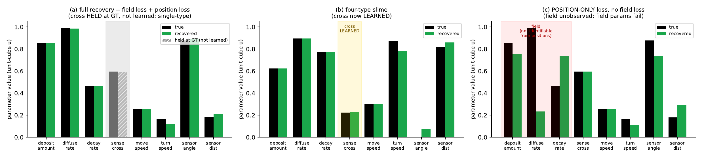
cross is held at its true value (grey hatched bar) — a single type cannot constrain it, so the matching bars are not a recovery. (b) four-type slime: the same scheme genuinely learns cross (gold band). (c) pure position-only loss with no field loss (the field is free-run and never observed): motion and sensing parameters still recover, but the field parameters (red band) do not — they are unidentifiable from particle motion alone over the usable horizon. A latent field needs its own observation.
The recovered spec does not match the target frame-for-frame — the process is stochastic — but produces the same topology: the same filament network, loop density and length scale.
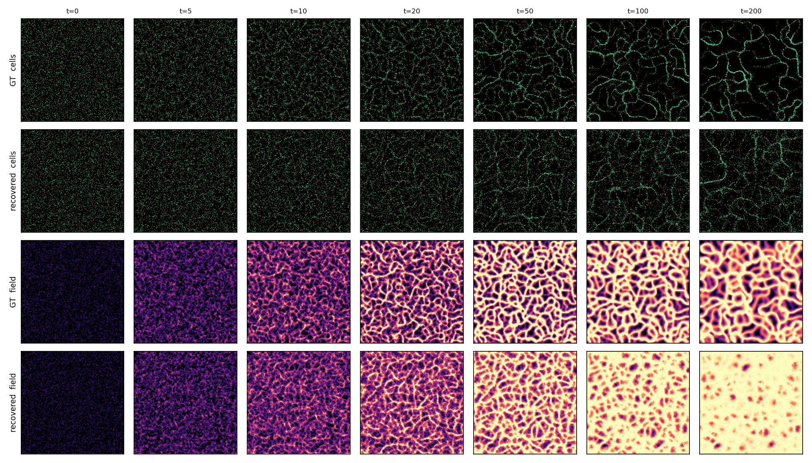
Three observations
1. The rollout is a written generative process.
The time-lapse looks like a generative diffusion model: each rollout starts from spatial noise — uniformly random cell positions and an empty field — and tick by tick condenses that noise into a definite morphology, a path from noise to a sample on the data manifold. The decisive difference is that the generative law is not a learned black box: the transition kernel \(x_{t+1}=\Phi(x_t)\) is the explicitly written calculus of operators (deposit, diffuse, decay, sense, advance), and the prior it samples from is fixed by \(\sim\!8\) interpretable constants. The inverse problem is therefore not “invert a neural sampler” but “identify the few physical constants of a known generative law” — which is exactly why a handful of gradient steps suffice where amortizing a diffusion prior would not. The stochasticity (the random seed, the random turn in sense) plays the role of the diffusion noise schedule: any single rollout is one sample, reproducible only in distribution, never pixel-for-pixel.
2. Parameters encode a topology, not a configuration.
This reframes what “recovering the spec” means. Two rollouts of the same spec under different seeds are never identical point-for-point, yet they are the same object topologically — the same kind of filament web, with the same branch density, loop statistics and characteristic length. The parameters do not encode a particular configuration; they encode a topology, equivalently a dynamical regime — the attractor onto which the operator flow condenses noise. Different parameter regions encode qualitatively different topologies (a space-filling network vs. isolated clusters vs. a near-lattice), separated by bifurcations of the operator dynamics. So the inverse map is really observed topology → the dynamical law whose attractor has that topology, and the per-parameter identifiability findings are the precise statement that some topological features pin some parameters (lateral field structure pins sensor_angle; multi-channel structure pins cross) while leaving others free. Recovering the spec is recovering the generator of a topology, not the topology itself — which is the version of the problem that is both well posed and useful.
3. Why the match is topological, not pointwise.
Because the success criterion is distributional, the correct loss must be too. A pointwise position loss works only on a short, pre-chaotic horizon; over long horizons the same spec decorrelates from itself, and the only stable signal is the topology — which is why behaviour-level, permutation-invariant comparisons (and the per-frame, short-horizon position loss used here) succeed where long pointwise rollouts fail. The encoded “dynamics/topology” is thus the invariant the inverse problem is actually solving for.
Why this matters for Plexus. The same explicit, differentiable primitives that make a behaviour “a new sentence in the language” also make its inverse tractable: the same spec serves prediction, inverse inference, and — next — the optimization of biological designs. A full static write-up is in prototype/inverse_slime/inverse_slime.pdf.
Gallery: all ground-truth-vs-recovery panels
The panels below reproduce every visual page of the report: the showcase single-type target (method comparison), three further single-type targets, and the two-type and four-type cases (cells coloured by type; the multi-channel field shown as a per-species colour composite). In every panel the top row is ground truth and the rows below are recoveries; columns are time.
Showcase single-type target
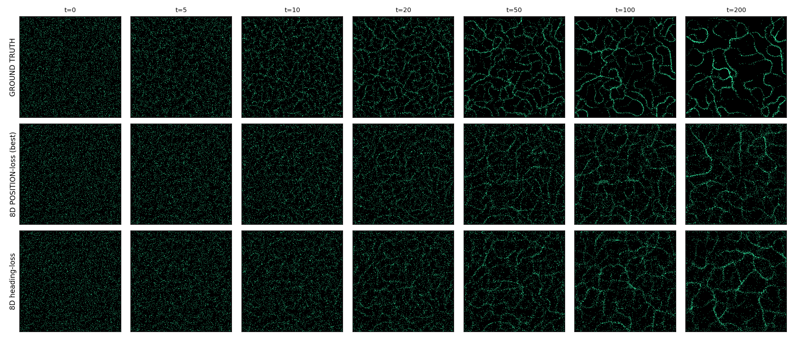
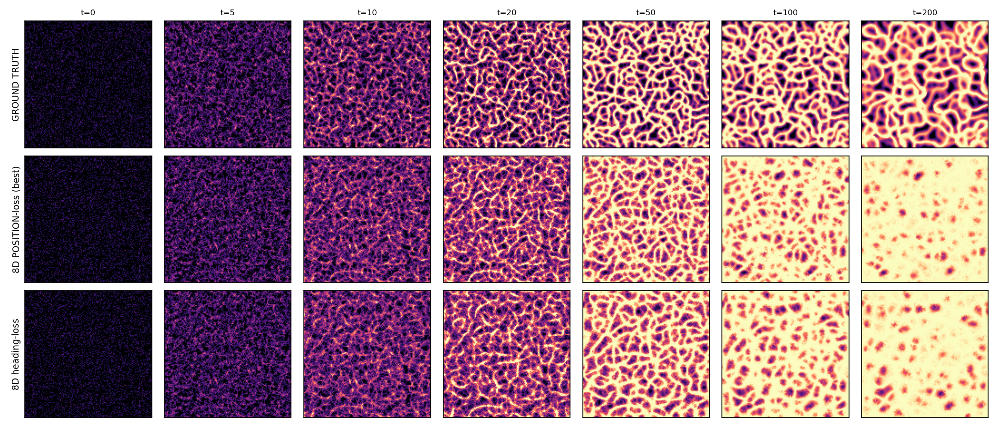
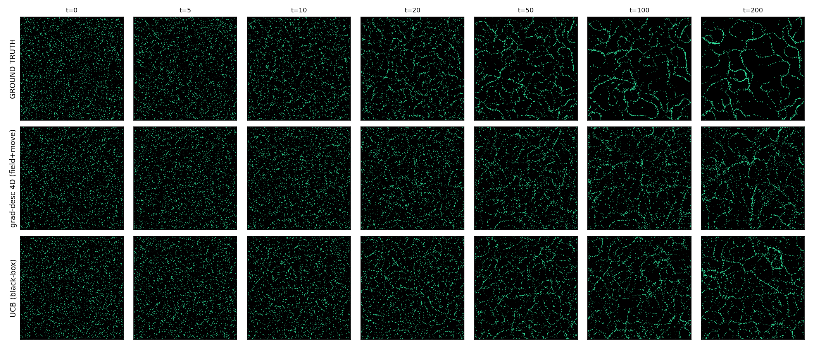
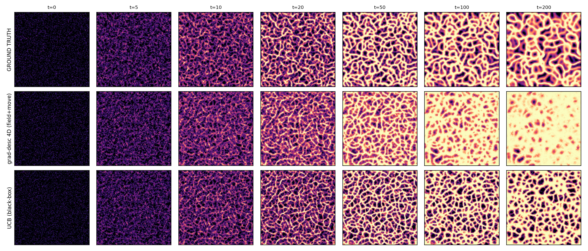
Three further single-type targets
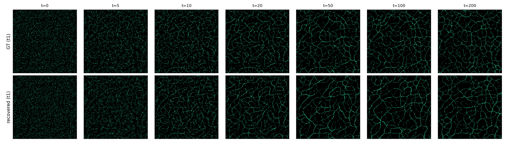
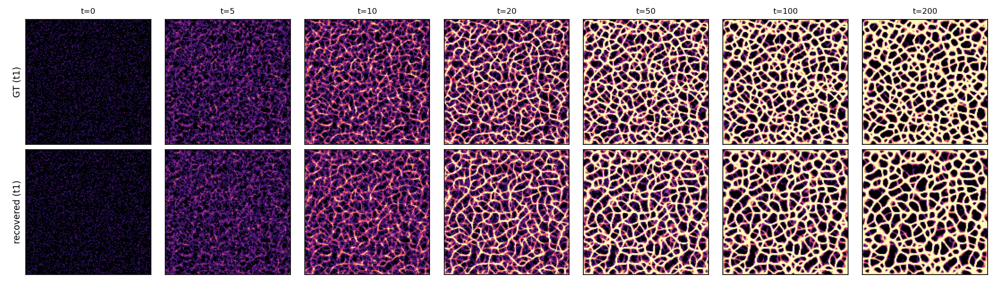
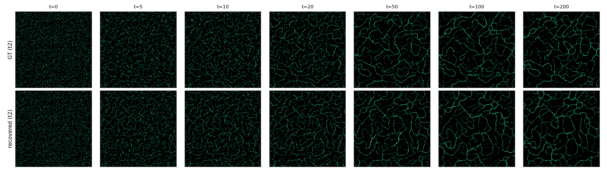
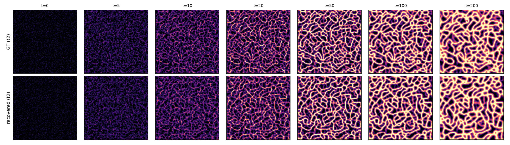
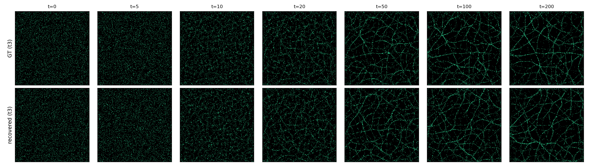
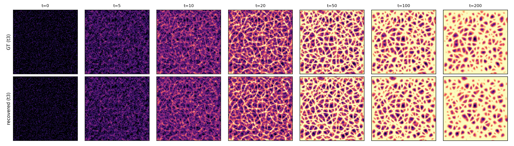
Two-type and four-type slime — cross now recovered
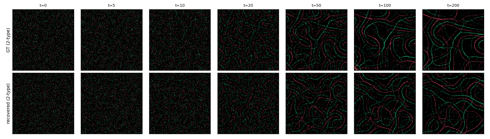
cross now recovered).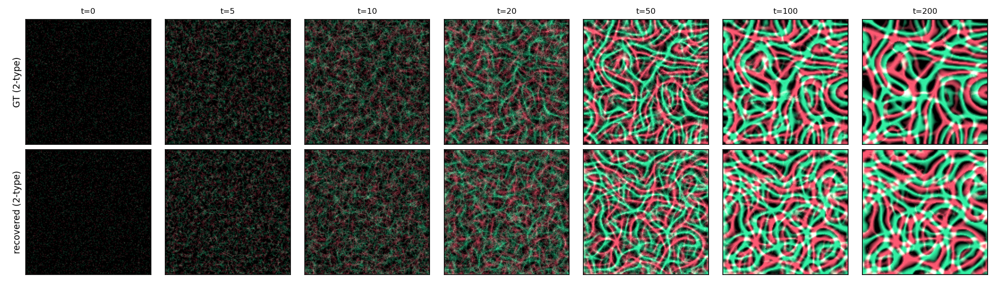
cross now recovered).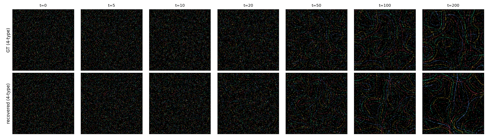
cross now recovered).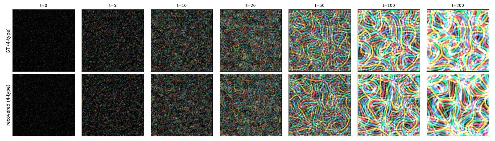
cross now recovered).